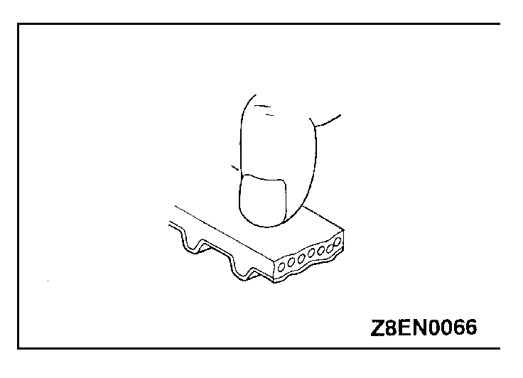
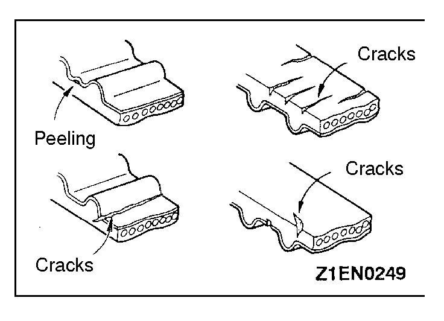
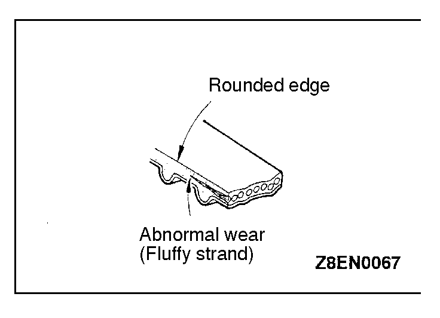
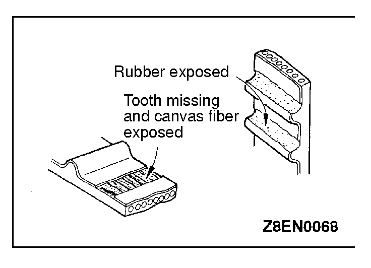
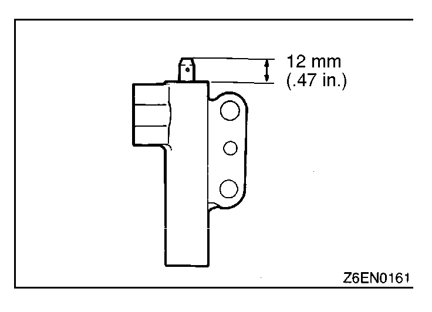
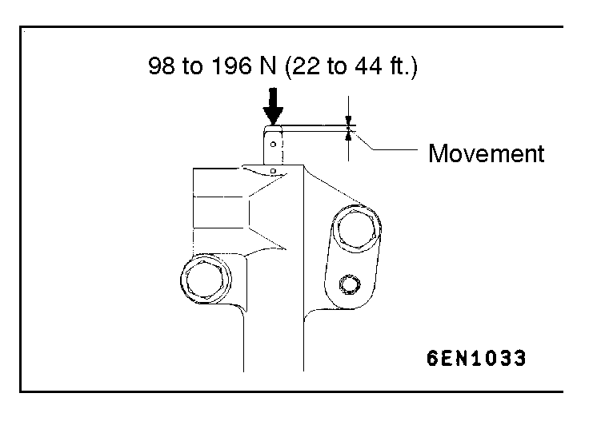

![[Previous]](https://mitsubishitechinfo.com/data/F24S/BUTTONS/fprevg.png)
![[Next]](https://mitsubishitechinfo.com/data/F24S/BUTTONS/fnextg.png)
     
INSPECTION
TIMING BELT
Replace belt if any of the following conditions exist.
(1)Hardening of back rubber.
Back side is glossy without resilience and leaves no indent when pressed with fingernail.
(2)Cracks on rubber back.
(3)Cracks or peeling of canvas.
(4)Cracks on rib root.
(5)Cracks on belt sides.
(6)Abnormal wear of belt sides. The sides are normal if they are sharp as if cut by a knife.
(7)Abnormal wear on teeth.
(8)Missing tooth.
AUTO TENSIONER
(1)Check the auto tensioner for possible leaks and replace as necessary.
(2)Check the rod end for wear or damage and replace as necessary.
(3)Measure the rod protrusion. If it is out of specification, replace the auto tensioner.
Standard value: 12 mm (.47 in.)
(4)Press the rod with a force of 98 to 196 N (22 to 44 ft.) and measure its protrusion.
(5)If the measured value is 1 mm (0.39 in) or more shorter than the value obtained in step (3), replace the auto tensioner.